Documented Activities & Updates
Recent activities, events and engagements that YCBN has organised or participated in. These are based on published flyers and reports available on this page.
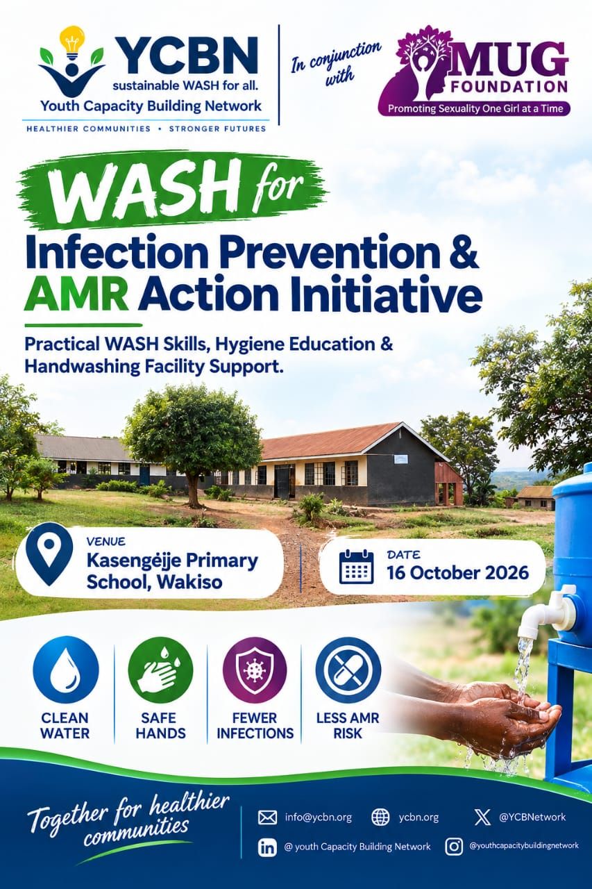
WASH for Infection Prevention & AMR Action Initiative
In conjunction with the MUG Foundation, YCBN will host the WASH for Infection Prevention & AMR Action Initiative at Kasengejje Primary School, Wakiso, delivering practical WASH skills, hygiene education, and handwashing facility support to learners and the school community.
The initiative champions a simple formula for healthier communities - Clean Water, Safe Hands, Fewer Infections, and Less AMR Risk - positioning WASH as the first line of defense against antimicrobial resistance.
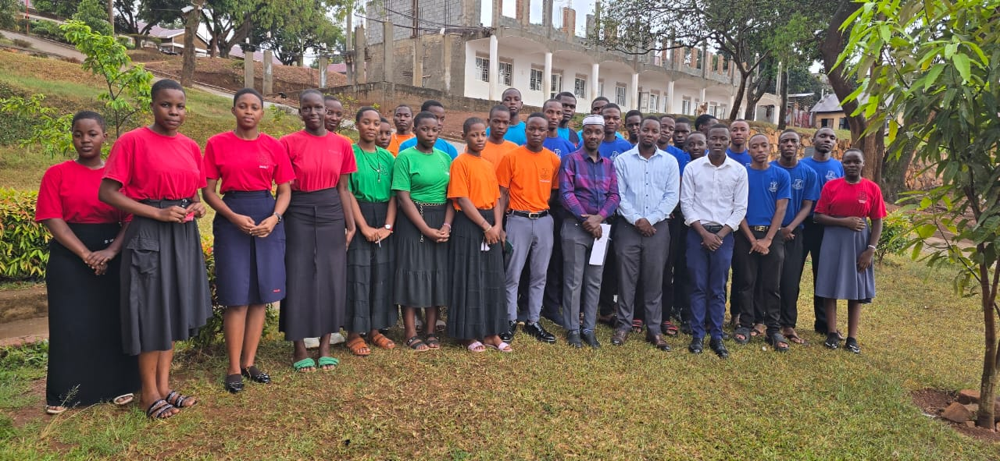
Nurturing Generational Leaders: YCBN's Leadership Ethics Outreach
YCBN conducted a capacity-development visit to St. Charles Lwanga Secondary School in Kibiri, bringing student leaders and prefects together to discuss leadership ethics, responsibility, and effective student governance.
The YCBN delegation comprised Mr. Mulwanyi Robert, Vice Chairperson, Board of Directors; Mr. Mwanje Frank Abdallah, Executive Director; and Mr. Kigozi Simon, Public Relations Officer.
View Outreach Photo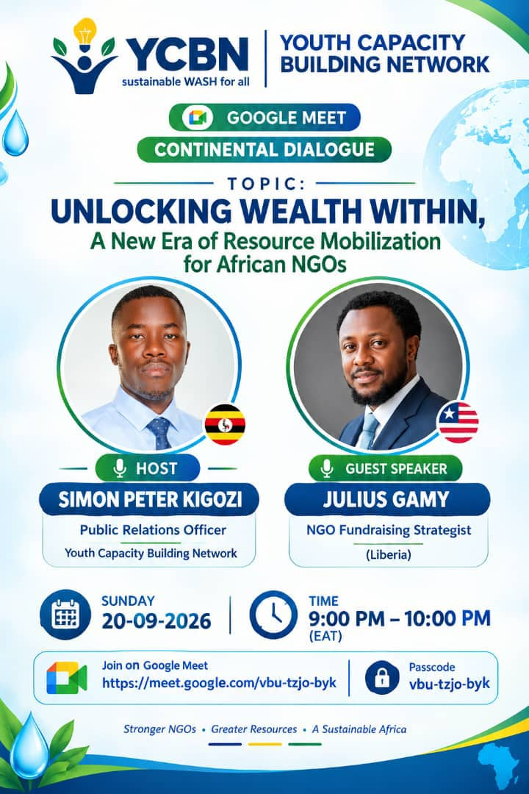
Unlocking Wealth Within: A New Era of Resource Mobilization for African NGOs
YCBN's upcoming dialogue will explore sustainable resource mobilization, local funding models, and modern frameworks to help African NGOs unlock internal potential and scale their impact.
Guest speaker Julius Gamy, NGO Fundraising Strategist from Liberia, will join host Simon Peter Kigozi, YCBN Public Relations Officer, on Sunday, September 20, 2026, from 9:00 PM to 10:00 PM EAT.
Passcode: vbu-tzjo-byk
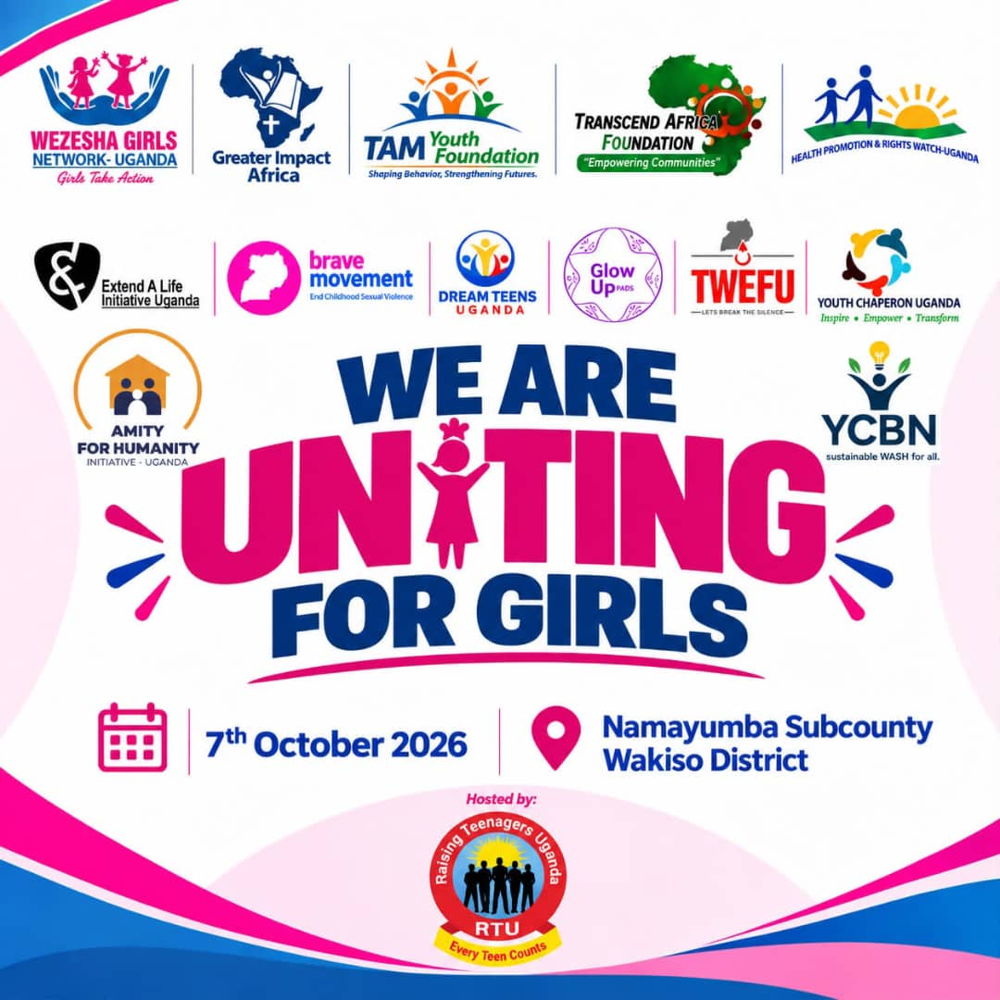
Unite for Girls: Empowering Communities Ahead of the International Day of the Girl Child
YCBN will join member organizations of the Wezesha Girls Network Uganda for a community outreach hosted by Raising Teenagers Uganda (RTU) from 10:00 AM to 1:00 PM in Namayumba Sub-County, Wakiso District, ahead of the October 11 International Day of the Girl Child.
The coalition includes Greater Impact Africa, TAM Youth Foundation, Transcend Africa Foundation, Health Promotion & Rights Watch - Uganda, Extend A Life Initiative Uganda, Brave Movement, Dream Teens Uganda, Glow Up Pads, TWEFU, Youth Chaperon Uganda, and Amity for Humanity Initiative - Uganda.
The initiative will distribute scholastic materials, provide sanitary pads and menstrual hygiene education, and deliver mentorship and sensitization sessions under the rallying cry, "When girls unite, communities transform."
View Event Flyer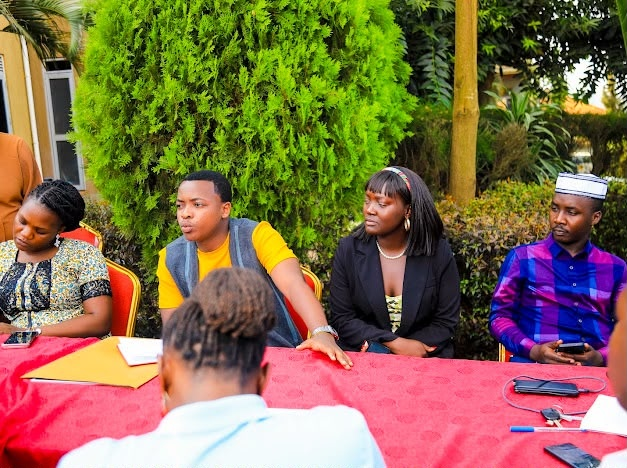
Advancing Girls' Rights through SRHR Advocacy and Storytelling
YCBN participated in a high-impact grassroots advocacy engagement hosted by member organizations of the Wezesha Girls Network. Executive Director Mr. Frank Mwanje represented YCBN alongside youth leaders, advocates, and civil society stakeholders.
The Lishi Resort engagement focused on girls' rights, storytelling, accurate SRHR information, and strategic partnerships with Youth Chaperon Uganda and Amity for Humanity to strengthen support systems for young people.
View Engagement Photo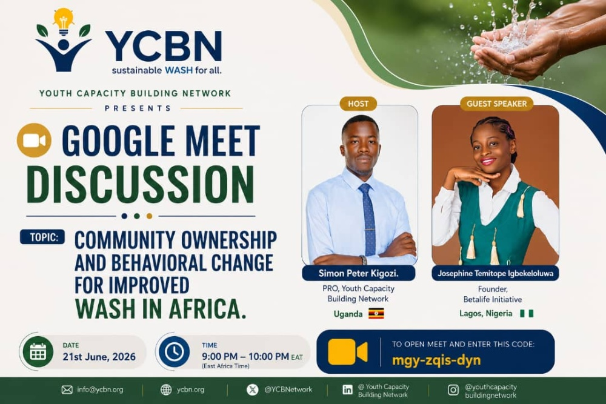
Community Ownership and Behavioral Change for Improved WASH in Africa
YCBN hosted an international Google Meet discussion sharing practical approaches, community-led strategies, and behavioral insights for creating sustainable water, sanitation, and hygiene solutions across African communities.
Hosted by Public Relations Officer Simon Peter Kigozi (Uganda), the session featured keynote speaker Josephine Temitope Igbekeloluwa, Founder of Betalife Initiative (Lagos, Nigeria).
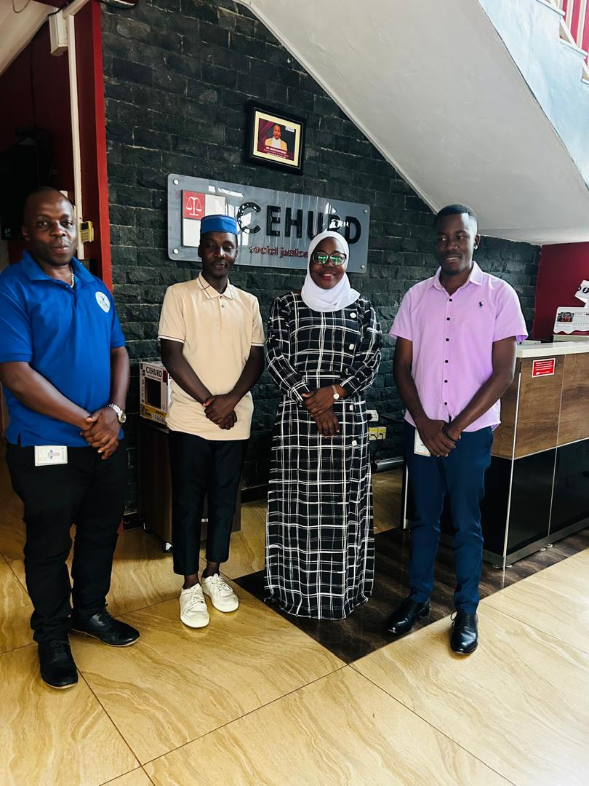
Strategic Partnership: YCBN Visits CEHURD Leadership
YCBN paid a courtesy visit to Ms. Nakibuuka Noor Musisi, Deputy Executive Director of the Center for Health, Human Rights and Development (CEHURD), in Gayaza. The engagement laid a strong foundation for joint grant fundraising, collaborative initiatives, and awareness campaigns around SRHR and Menstrual Hygiene Management.
Special commendation goes to YCBN staff member Mr. Siraje for initiating this vital meeting.
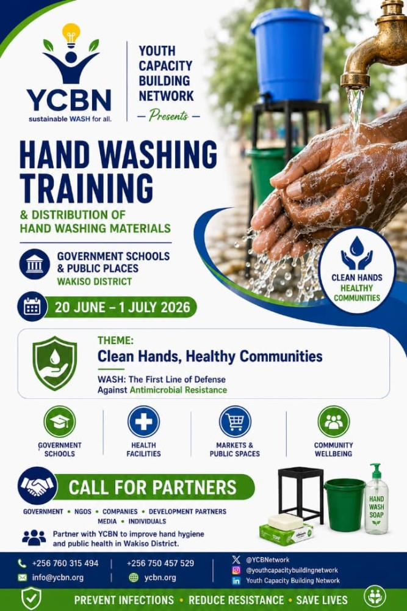
Hand Washing Training and Material Distribution Campaign
YCBN invites government agencies, NGOs, companies, development partners, media organizations, and well-wishers to support a campaign running from June 20 to July 1, 2026 across Wakiso District.
Under the theme, "Clean Hands, Healthy Communities: WASH as the First Line of Defense Against Antimicrobial Resistance," the campaign will equip government schools, health facilities, markets, and public spaces with critical hygiene resources.
Celebrating Impact: YCBN at the 8th National Good Deeds Day
YCBN joined the 8th National Good Deeds Day Celebration under the theme, "The Power of Young People in Building a World of Doing Good." The event featured exhibitions, performances, tree planting, and community giving, bringing together changemakers committed to uplifting communities.
View Celebration Photo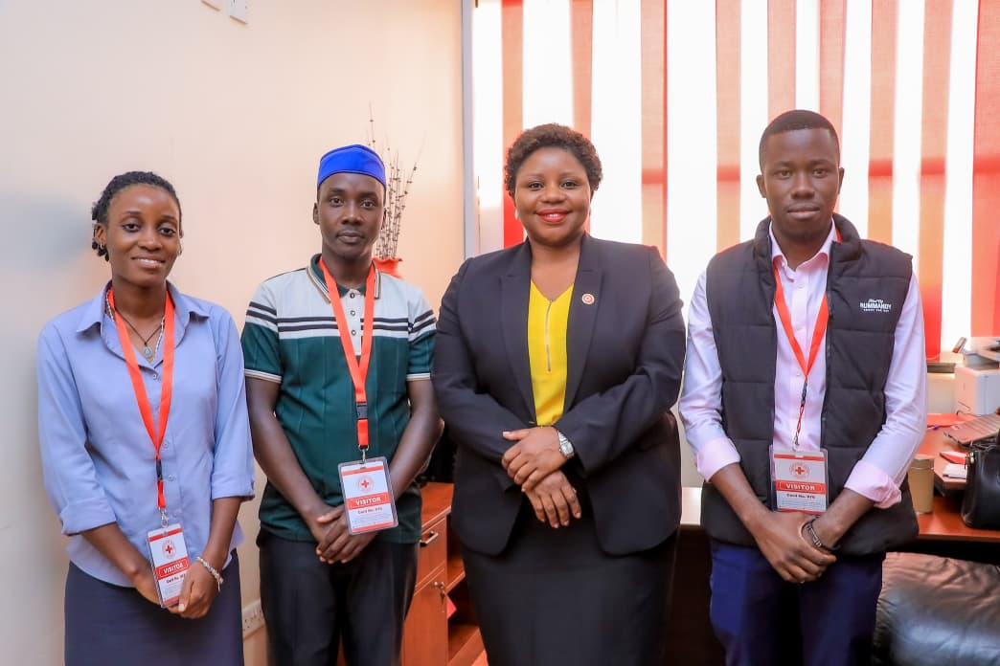
Strategic Partnership: YCBN Engages with the Uganda Red Cross Society
YCBN held a high-level, fruitful engagement with the Uganda Red Cross Society at its head office in Rubaga. The meeting explored meaningful collaboration on specific projects and ways to build strong institutional alliances for large-scale community initiatives.
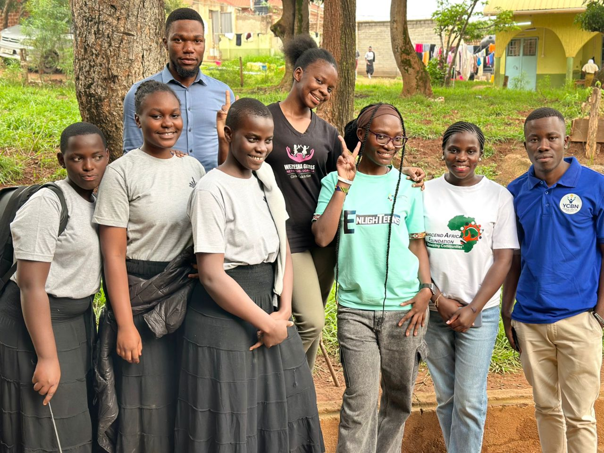
Empowering the Next Generation: Pre-International Women's Day
YCBN joined Wezesha Girls Network and partner networks for an inspiring celebration under the theme, "Give to Gain - She Rises When We Give." The event featured mentorship, community engagement, resource sharing, and direct support to empower girls to rise, lead, and shape a brighter future.
View Celebration Photo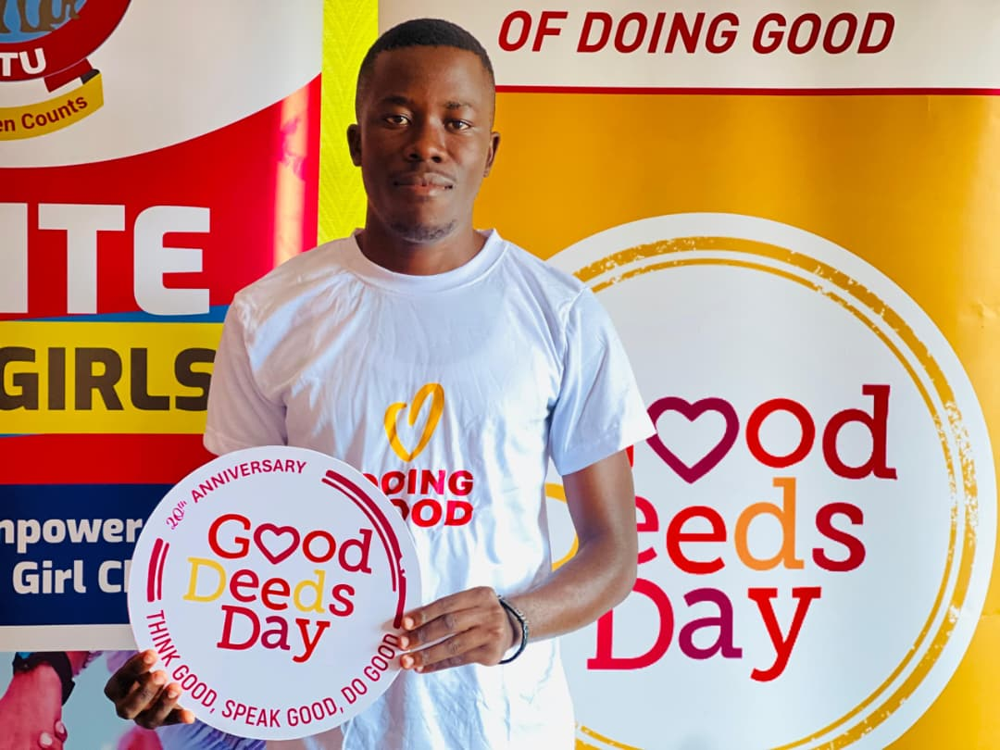
YCBN Takes Part in Good Deeds Day Preparations
YCBN Public Relations Officer Mr. Simon Peter Kigozi took part in the official preparation meeting for Good Deeds Day at Olive School-Namugongo. Guided by the motto, "Think Good: Speak Good: Do Good," the April 2026 event will connect YCBN with like-minded change-makers and partner organizations for collaborative community impact.
View Event Photo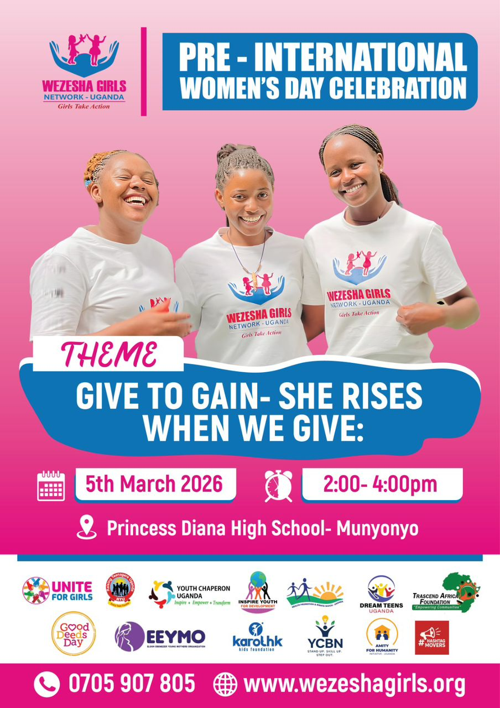
YCBN Recognized for Pre-International Women's Day Celebrations
YCBN was officially recognized as part of the Pre-International Women's Day Celebrations organized by Wezesha Girls Network - Uganda under the theme, "Give to Gain - She Rises When We Give." The event convened youth networks, community leaders, and partner organizations to empower girls and drive inclusive community impact.
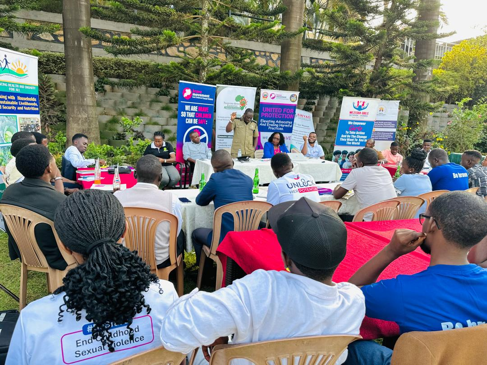
Strengthening Child Protection Partnerships: YCBN at the Lishi Resort Engagement
YCBN participated in a high-level stakeholder engagement hosted by Transcend Africa Foundation and Brave Movement Uganda. The interactive meeting brought together community leaders, security representatives including the Uganda Police Force, and youth advocates to discuss strategies for combating Childhood Sexual Violence.
The engagement at Lishi Resort Hotel in Kyanja strengthened collaborative efforts to build safer, more protective environments for young people.
View Engagement Photo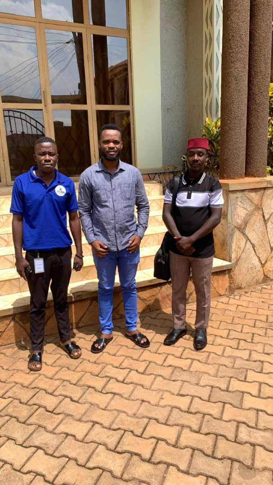
Strategic Partnership: YCBN Engages with Transcend Africa Foundation CEO
YCBN held a high-level engagement with Mr. Bwambale Dickson, CEO of Transcend Africa Foundation, discussing resilience, resourcefulness, and robust internal systems that can attract sustainable funding even in challenging circumstances.
The engagement opened opportunities to connect with coalitions and civil society organizations for future collaborative initiatives, supporting YCBN's continued network growth and community impact.
View Engagement Photo
Strengthening Community Ties: YCBN Visits Youth Plus Elite Club
YCBN engaged with our sister organization, Youth Plus Elite Club in Kitebi, to connect, share experiences, and explore collaborative ways to further empower youth, drive community innovation, and build sustainable impact together.
View Visit Photo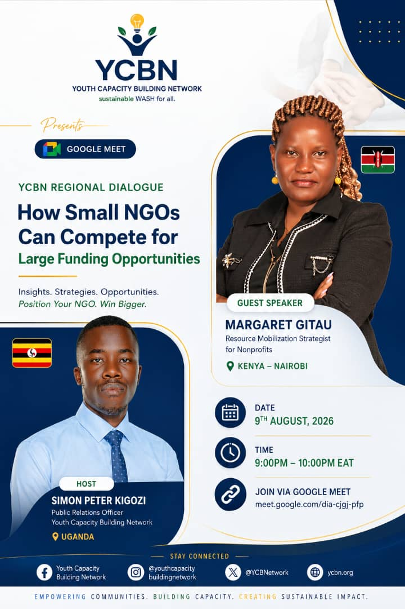
How Small NGOs Can Compete for Large Funding Opportunities
YCBN convened a continental dialogue equipping emerging organizations with practical strategies for winning major grants. Hosted and moderated by Mr. Simon Peter Kigozi, the session featured Ms. Margaret Gitau of NobleCause Consultancy Firm in Nairobi, Kenya, and explored governance, financial systems, impact evidence, digital credibility, funding diversification, the Pain-Gap-Stakes model and a 90-day action plan.
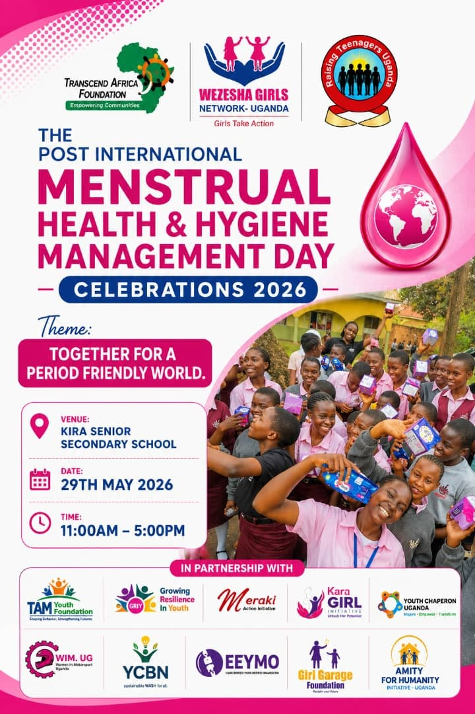
Post International Menstrual Health & Hygiene Management Day
YCBN joined youth-led and community organisations for the Post International Menstrual Health & Hygiene Management Day celebrations at Kira Senior Secondary School, promoting dignity, breaking stigma and empowering girls through education and collective action.
View ReportReinventing NGOs through Technology, AI & Digital Fundraising
YCBN and Resilient Societies of Zimbabwe hosted an international Google Meet discussion exploring innovative digital tools, artificial intelligence applications, and modern fundraising strategies for a resilient, future-ready civil society sector.
The session was hosted by YCBN Executive Director Mr. Frank Mwanje and featured Mr. Godfrey Madyauta, Programs Director at Resilient Societies of Zimbabwe, and Mr. Kondwani Nyirenda, Mechatronic Engineer from Zambia.
View Event Flyer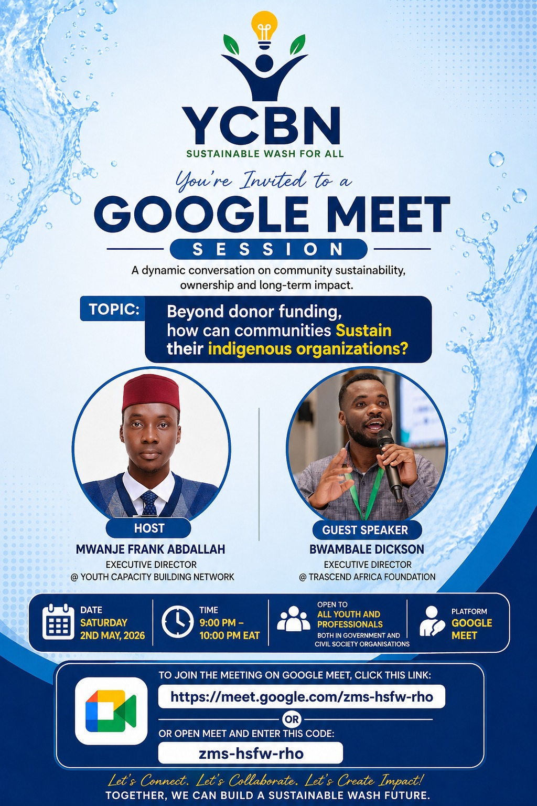
Beyond Donor Funding: Sustaining Indigenous Organizations
YCBN hosted an engagement session exploring how communities can sustain their own organisations through local resource mobilisation, income-generating initiatives, community ownership, partnerships and stronger governance.
Read More
Pre-International Women's Day Outreach
As part of 2026 International Women's Day activities, YCBN carried out outreach at Princess Diana High School, including mentorship and menstrual health education. A full report is available.
View Report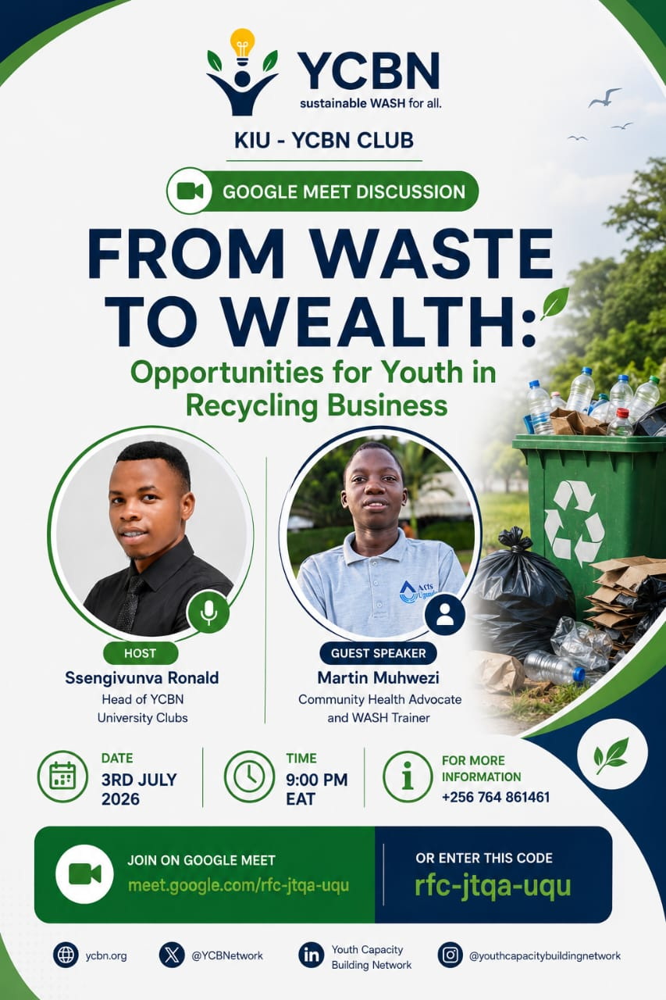
From Waste to Wealth: Opportunities for Youth in Recycling Business
This session explored the number of participants, key takeaways on youth recycling business opportunities, and follow-up commitments arising from the discussion.
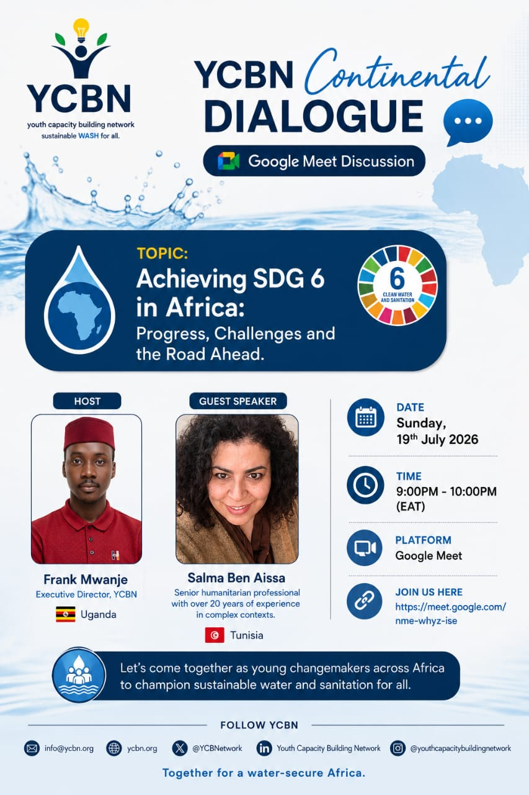
Achieving SDG 6 in Africa
This dialogue brought together young changemakers to discuss priority actions for clean water and sanitation, and commitments made by participants.
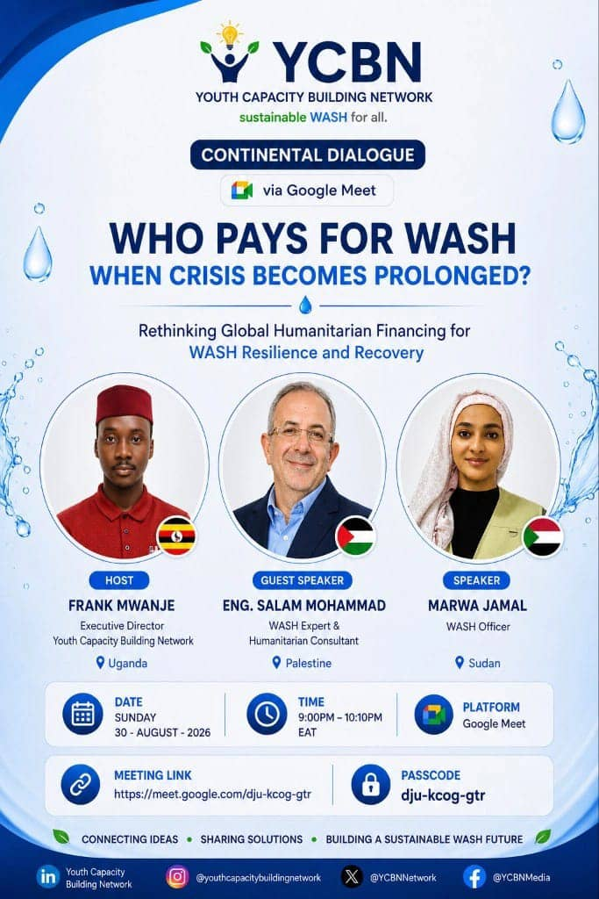
Who Pays for WASH When Crisis Becomes Prolonged?
This Continental Dialogue brought together WASH practitioners and young changemakers to rethink global humanitarian financing for WASH resilience and recovery when crises become prolonged. Hosted by Frank Mwanje (Executive Director, YCBN) with guest speaker Eng. Salam Mohammad (WASH Expert & Humanitarian Consultant, Palestine) and Marwa Jamal (WASH Officer, Sudan), the session explored how WASH resilience and recovery can be financed more equitably. A Certificate of Appreciation was presented to Eng. Salam Mohammad in recognition of his invaluable insights, expertise and contribution to the dialogue.
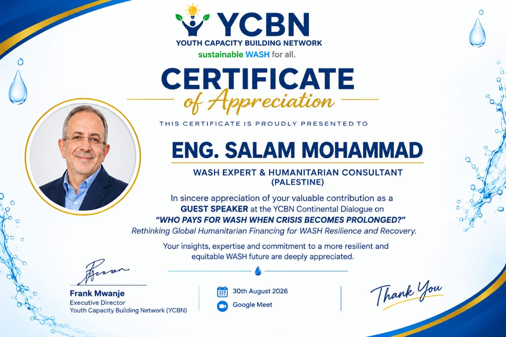